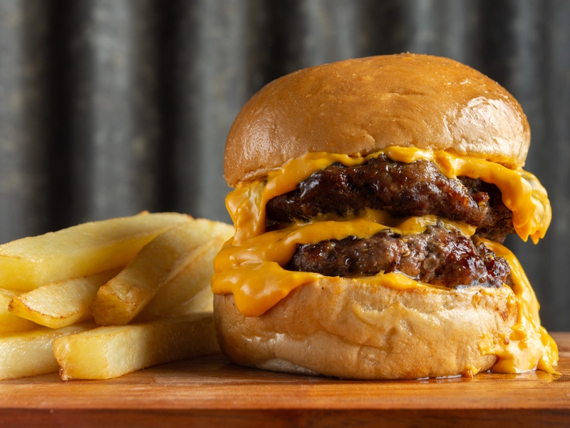

Ingredientes
- 2 medallones de carne
- Pan de hamburguesa
- Queso cheddar
- Panceta crujiente
- Pepinillos
- Aderezo a elección (ketchup, mostaza, mayonesa)
- Papas para freír
Preparación
- Freír las papas hasta dorar.
- Cocinar los medallones en una plancha o sartén.
- Agregar queso cuando estén casi listos.
- Tostar el pan y armar la hamburguesa con todos los ingredientes.
- Servir con las papas calientes.